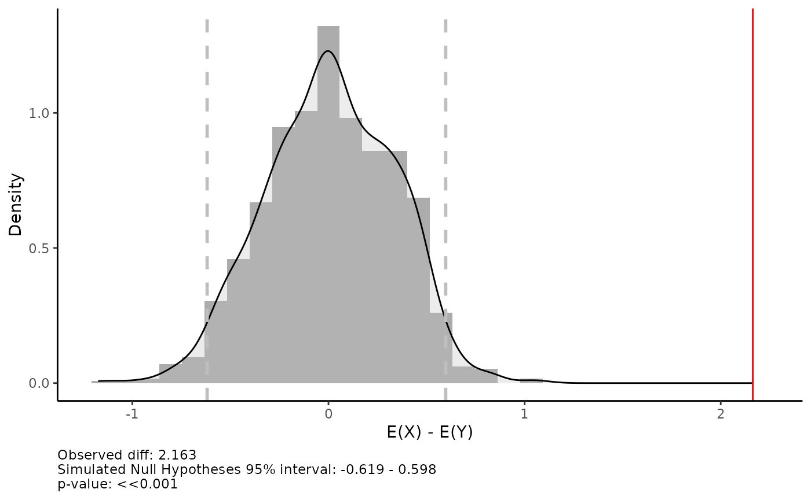

Get started with csra
csra.RmdExample 1: equalparts()
This is a basic example that shows you how the main (and really
powerful) function equalparts() works:
data("datex") #it's an example panel "long" data that you can use
#Now let's try to analyze how VDEM democracy index affects revolutionary situations
equalparts(
data = datex, #our data
independent = 'VDEM_v2x_polyarchy', #independent var
lag_independent = T, #Should it be lagged? Yes, because political regime can change dramatically during revolutionary year
lag_code = "iso3", #by what unit lag is realized (object from country-year, in our case it is iso3 code)
lead = T, #due to data specific in the top we have earlier data - 2019, 2018, 2017, ..., so `lead` should be used. Otherwise, False is needed
dependent = 'NVC_1.3_NONVIOL', #dependent var
n = 6, #number of equal parts. If n = 10, it is decile analysis, 4 - quartile analysis and etc
bar_or_scatter = 'scatter', #plot type, scatter is more powerful
regline = TRUE, #linear regression line
return_data = FALSE, #we want to see plot, so we do not need data
conf_bars = TRUE, #95%CI
range_bars = FALSE, #range (max-min) of independent var in each unit (for ex., decile)
save_plot = FALSE #we do not want to save plot, so its False
)The note section is constructed as follows:
1. Pearson’s r (note,
that measures linear association)
2. Lower and higher bound of 95% CI of correlation coefficient are in
square brackets
3. p-value of a t-statistics that is in the brackets (so, it is
).
4.
statistics with stars indicating the
level of significance (note, in this function
).
Plot that is returned by default can be easily changed by ggplot2 syntax. Just save function output and add to it ggplot2 blocks:
library(ggplot2)
plot <- equalparts(
data = datex,
independent = 'VDEM_v2x_polyarchy',
lag_independent = T,
lag_code = "iso3",
lead = T,
dependent = 'NVC_1.3_NONVIOL',
n = 6,
bar_or_scatter = 'scatter',
regline = TRUE,
return_data = FALSE,
conf_bars = TRUE,
range_bars = FALSE,
save_plot = FALSE
)
# for ex., change axis names and theme
plot + xlab("x var name") + ylab("y var name") + theme_grey()Also table with results can be returned, just set
return_data = TRUE:
equalparts(
data = datex,
independent = 'VDEM_v2x_polyarchy',
lag_independent = T,
lag_code = "iso3",
lead = T,
dependent = 'NVC_1.3_NONVIOL',
n = 6,
bar_or_scatter = 'scatter',
regline = TRUE,
return_data = TRUE, #here
conf_bars = TRUE,
range_bars = FALSE,
save_plot = FALSE
)
#> parts Freq_0 Freq_1 means min max prc5 prc95 low95CI
#> 7 1 1592 21 0.09029262 0.008 0.145 0.016 0.143 0.007487174
#> 8 2 1583 30 0.17917483 0.145 0.214 0.149 0.210 0.012005542
#> 9 3 1565 48 0.28196590 0.214 0.362 0.220 0.354 0.021465775
#> 10 4 1551 62 0.47658215 0.362 0.600 0.372 0.588 0.029055460
#> 11 5 1578 35 0.71369994 0.601 0.814 0.613 0.801 0.014588331
#> 12 6 1605 7 0.86508437 0.814 0.926 0.820 0.907 0.001132506
#> high95CI
#> 7 0.018551264
#> 8 0.025192226
#> 9 0.038050654
#> 10 0.047819928
#> 11 0.028809065
#> 12 0.007552358The columns in the table are:
1. parts - equal subsample. In our case - sixtiles.
2. Freq_0 - number of observations with “0” values.
3. Freq_1 - number of observations with “1” values.
4. means - mean of independent variable in specific
interval (equal part).
(scatter plot between Freq_1 and means is the
basic plot that is pictured earlier).
5. min - min value of independent variable in specific
interval (equal part).
6. max - max value of independent variable in specific
interval (equal part).
7. prc5 - 5 percentile value of independent variable in
specific interval (equal part).
8. prc95 - 95 percentile value of independent variable in
specific interval (equal part).
9. low95CI - lower Wald 95% interval (2.5%). Wald CI
are:
where
is an estimated probability, and
due to 95% CI.
10. high95CI - higher Wald 95% interval (97.5%).
Example 2: sdiff()
This function implements nonparametric test (alternative to t-test) based on Monte Carlo Simulations. The idea is straightforward. First, the initial difference between the groups is counted. Null hypothesis - this difference is equal to zero, alternative hypothesis - the difference is significantly different from zero. To test this hypothesis, an iterative procedure is created where values from both groups are randomly mixed (i.e. each observation can be randomly assigned to one of the groups). Due to randomness, the difference in the mean of the mixed groups should be zero. After a thousand such procedures, we construct a distribution of the resulting differences and then simply compare it with the observed difference. Consider the following example:
We firstly simulate two random variables - and . Lets assume that they show state-capacity index in group of countries that have never experienced revolutions () and the same index in the group of countries that have experienced at least one revolution in their history. We want to know - is there a statistically significant difference.
In our simulated example, and . So, indeed there is a difference in means. Lets try to statistically support it.
x = rnorm(50, 0.5, 2) #E(x) = 0.5
y = rnorm(50, 2, 2) #E(y) = 2
sdiff(y, x, n = 1000) #True E(y)-E(x) = 1.5
Indeed, there is a statistically significant difference and one can reject at any acceptable confidence level.
Example 3: calibration()
The next function calibration() gives an in-sample
calibration graph for binary outcome models. In other words, it is a
tool for model evaluation. The logic of that test is straighforward:
- Get estimated probabilities from a model and sort them into bins of equal width. By default function makes 10 equal parts.
- In each bin, compute: (a) mean predicted probability and (b) the average fraction of 1s
- Plot them and look at systematic deviation from 45 line. If there is no such a deviations, the model is good.
The function was inspired by Gary King, the idea came from his lecture, while I changed it a little bit.
logit <- glm(data = datex,
NVC_1.3_VIOL ~ UN_Total_Population_log + UN_Median_Age + VDEM_v2x_polyarchy_lag,
family = binomial(link = "logit"))
calibration(logit)Example 4: eba()
Extreme Boundary Analysis (EBA), proposed in its discussed view by Sala-i-Martin (1997) subsequent modifications proposed by other authors (Hegre and Sambanis 2006), is a method for testing the robustness of an estimate of a variable by running models with all possible combinations of other variables.
eba.out <- eba(y = "NVC_1.3_VIOL", #DV
x = "UN_Median_Age", #Var of interest
const = "year", #FE
control = c("VDEM_v2x_polyarchy_lag",
"UN_Total_Population_log",
"One_more_var",
"One_more_var",
"One_more_var"),
data = datex,
nvar = 3, #How many controls include in each model?
model = "logit",
cl = NULL #Numver of engines to use, default is `NULL` for one engine
)Some additional functions
Goldstone regime type classification
Goldstone et al. (2010)
proposed new regime type classification that is based on Polity-V
project. This approach distinguishes five types of political regimes
based on two indicators of the Polity database – EXREC (Executive
Recruitment) and PARCOMP (Competitiveness of Political Participation).
Function goldclass provide you with ability to recode
Polity-V data into 5-class variable:
1. full autocracy
2. partial autocracy
3. partial democracy
4. partial democracy with factionalism
5. full democracy
polity5data$goldstone_regime <- goldclass(exrec = polity5data$exrec, parcomp = polity5data$parcomp)FGLS model for estimated dependent variable
The edv.fgls function is based completely on the
following paper:
Lewis, J. B., & Linzer, D. A. (2005). Estimating regression models in which the dependent variable is based on estimates. Political analysis, 13(4), 345-364.
There are two possible strategies. If variance of each
is unknown, then numeric vector of number of observations
on which each
was estimated should be provided. For example,
- mean of housholds income, then n is the number of
housholds.
The second possible situation is when a variance of each
is known. In that case, you should provide DVvariance
argument in the function with numeric vector of such variances
.
References
Lewis, J. B., & Linzer, D. A. (2005). Estimating regression models in which the dependent variable is based on estimates. Political analysis, 13(4), 345-364.
Hegre, H., & Sambanis, N. (2006). Sensitivity analysis of empirical results on civil war onset. Journal of conflict resolution, 50(4), 508-535.
Xavier X. Sala-I-Martin. (1997). I Just Ran Two Million Regressions. The American Economic Review, 87(2), 178–183.